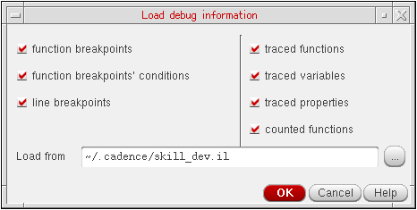

Saving and Reusing Debug Information
You can export the debug settings of your current session to a SKILL file for future use. The saved debug settings includes current line and function breakpoints, their conditions, traced functions, variables, and properties.
If you accidentally delete all breakpoints from your code, you can restore them by loading the debug information from a previously saved file.
Saving the Debug Settings
To save the debug settings of your current session:
- Choose Debug – Save Settings. The Choose file name to save debug data dialog box displays.
- Specify the name of the output file in the File Name field and click Save.
Loading the Debug Settings
-
Choose Debug – Load Settings. The Load debug information dialog box displays.
 - Specify the file from which you want to load your saved debug settings in the Load from field.
- Click OK.
Related Topics
Return to top